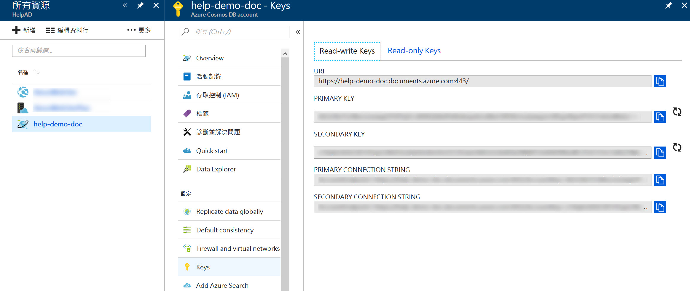
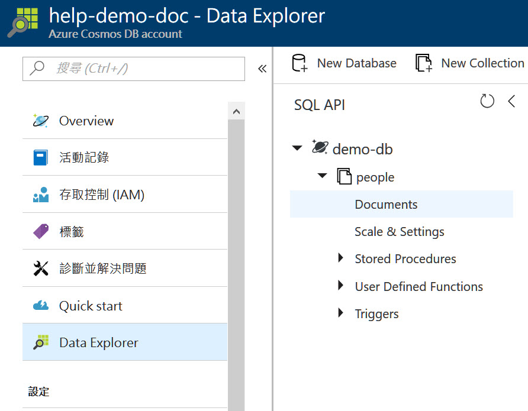

using System; using System.Threading.Tasks; using DemoCosmosDB.Models; using Microsoft.AspNetCore.Mvc; using Microsoft.Azure.Documents; using Microsoft.Azure.Documents.Client;
publicDocController() { _client = new DocumentClient(new Uri(_endpointUri), _primaryKey); }
[HttpGet("CreateDB/{name}")] publicasync Task<String> CreateDB(string name) { var result = await _client.CreateDatabaseIfNotExistsAsync(new Database { Id = name }); return result.StatusCode.ToString(); }
[HttpGet("CreateCollection/{db}/{collectionName}")] publicasync Task<string> CreateCollection(string db, string collectionName) { var dbLink = UriFactory.CreateDatabaseUri(db); var docCollection = new DocumentCollection { Id = collectionName, }; var result = await _client.CreateDocumentCollectionIfNotExistsAsync(dbLink, docCollection); return result.StatusCode.ToString(); }
[HttpPost("{db}/{col}/CreatePerson")] publicasync Task<string> CreatePerson(string db, string col, [FromBody]Person person) { var colLink = UriFactory.CreateDocumentCollectionUri(db, col); var result = await _client.CreateDocumentAsync(colLink, person); return result.StatusCode.ToString(); }
[HttpGet("{db}/{col}/ReadPerson/{id}")] publicasync Task<Person> GetPerson(string db, string col, string id) { var docLink = UriFactory.CreateDocumentUri(db, col, id); var result = await _client.ReadDocumentAsync<Person>(docLink); return result.Document; } } }
第12、13行的 endpoint URI 和 key，就在剛剛建立好的 Azure CosmosDB 的金鑰頁面。 分別是 URI 和 PRIMARY KEY 
建立 DB 和 Collection
要存 Document 之前，要先建立 DB 然後建立 Collection，最後才是 Document， 我們接連呼叫Web api api/Doc/CreateDB/demo-db api/Doc/CreateCollection/demo-db/people 用來建立 DB 和 Collection， 在建立 DB 和 Collection 的時候， Id 一定要給，並且 Id 不能重複。 建立完之後我們可以在 Azure CosmosDB 控制台的 Data Explorer 看到如下畫面 